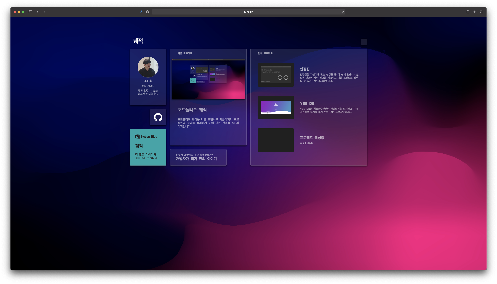
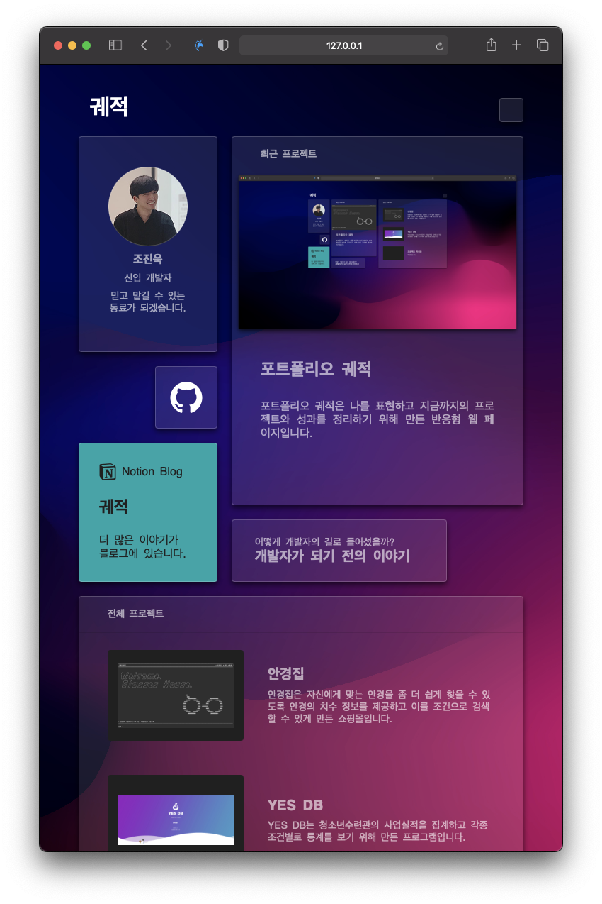

궤적
개발배경
넘쳐나는 이력서 속에서 나를 어필하기 위해서는 지금까지 공부해 온 것과 프로젝트들이 잘 정리된 포트폴리오가 필요하다고 생각했습니다.
프로젝트 개요
- 목적 : 취업시장에서 나를 어필할 수 있는 포트폴리오 웹페이지 제작
- 개발환경 : macOS Catalina, IntelliJ IDEA, VSC
- 주요사용기술
- HTML
- CSS : Grid, Media Query, Flex Box, Transition
- JavaScript : DOM 제어, EventListener
- 개발인원 : 1인
- 주요기능
- 보드형 레이아웃
- 사용자 디스플레이에 따라 변하는 반응형 웹
- 프로젝트 상세 페이지 모달창
개발포인트
1. CSS Grid와 Media Query를 이용해 반응형 웹을 만들었습니다.
